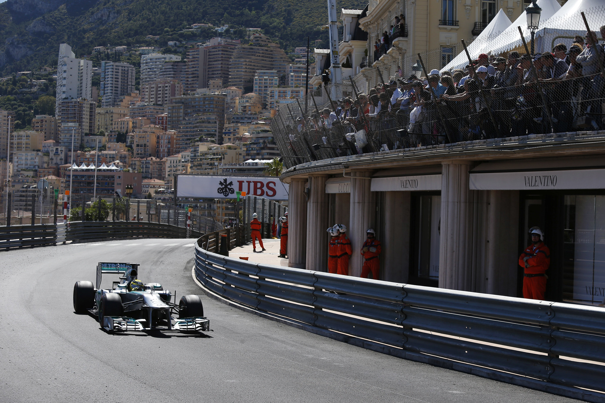

F1 Circuits
Where Champions Race
Formula 1 visits racetracks all over the globe. Below are some examples of circuits that are iconic to the
sport:
- Monaco - The glamorous street circuit
- Silverstone - The birthplace of F1
- Suzuka - A fast and challenging layout in Japan

Background image: 2013 Monaco Grand Prix - Sunday by United Autosports at https://flic.kr/p/pgxgWH, CC BY-SA 2.0.